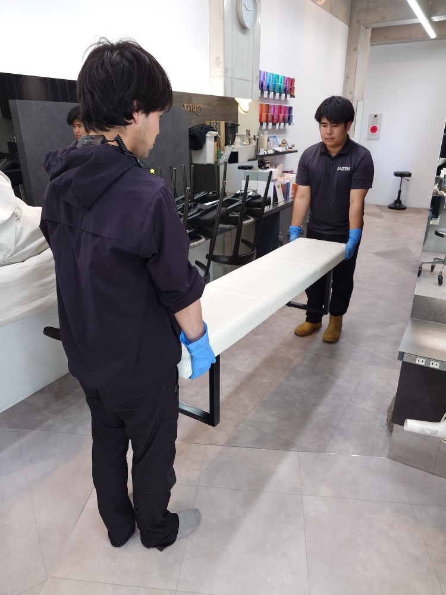
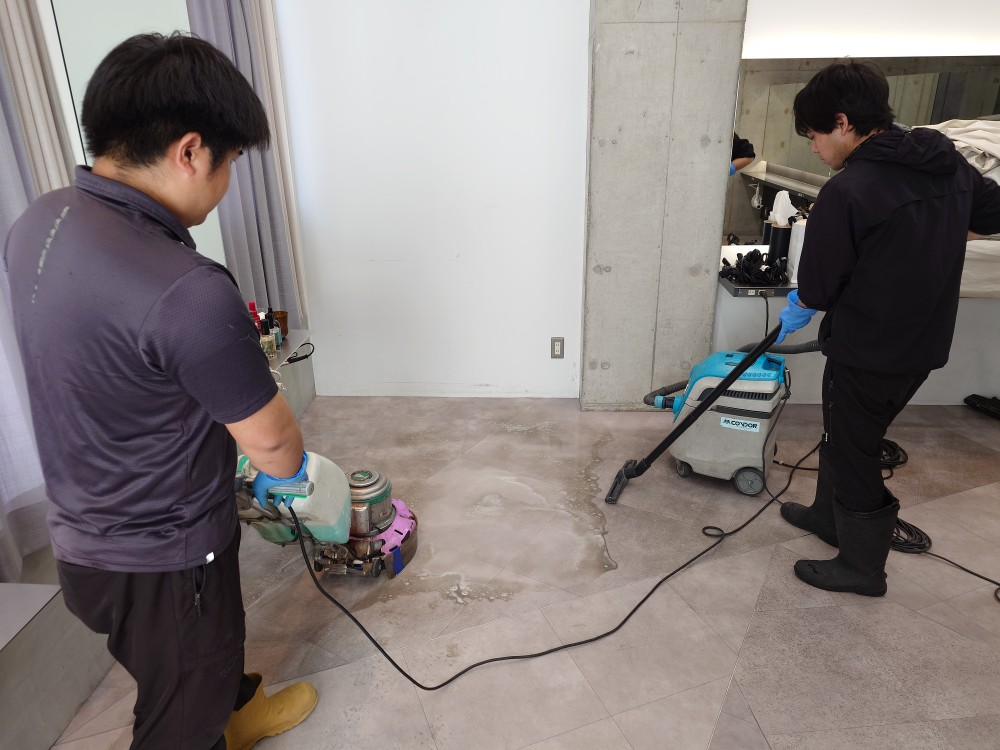
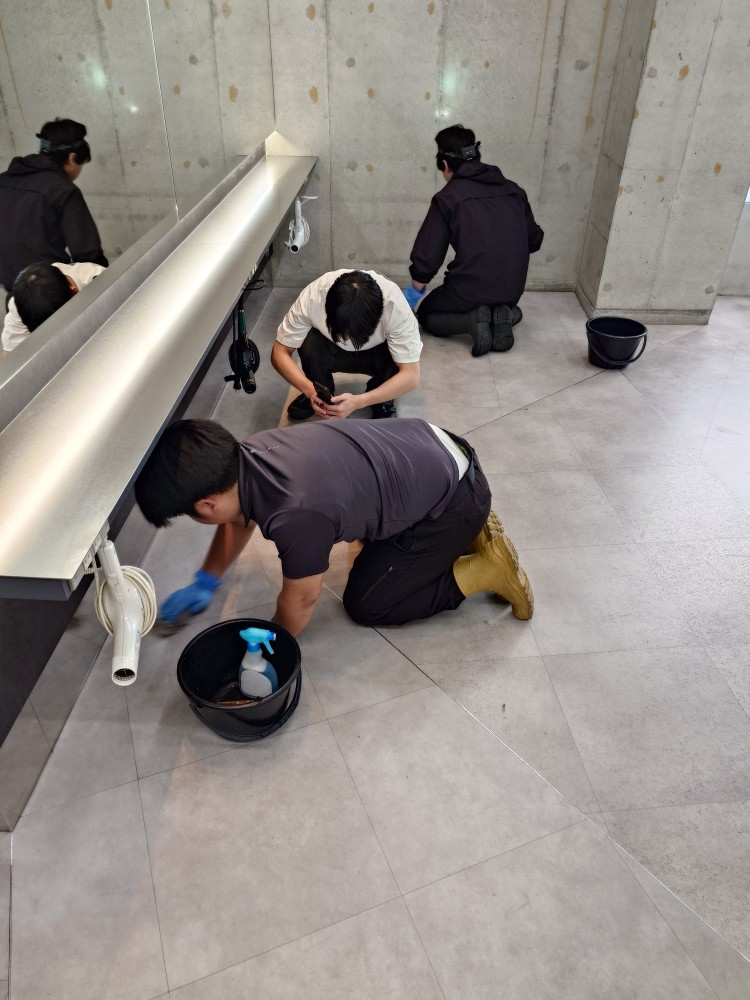
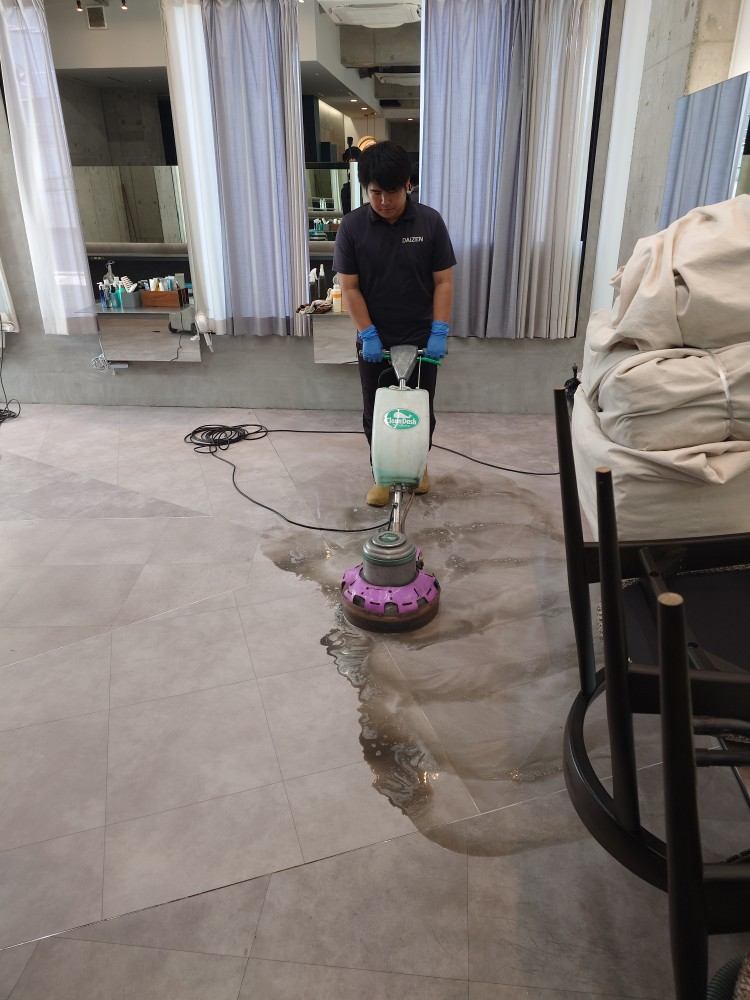
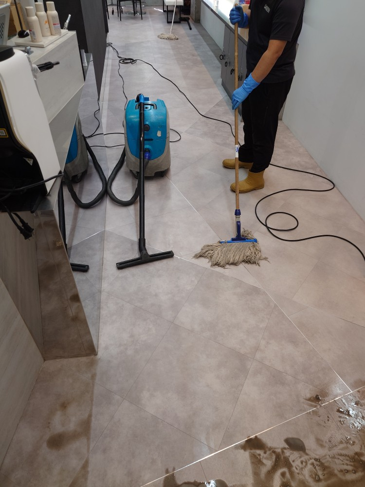
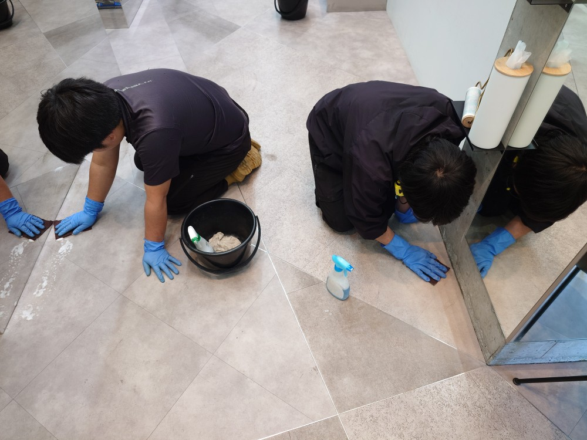
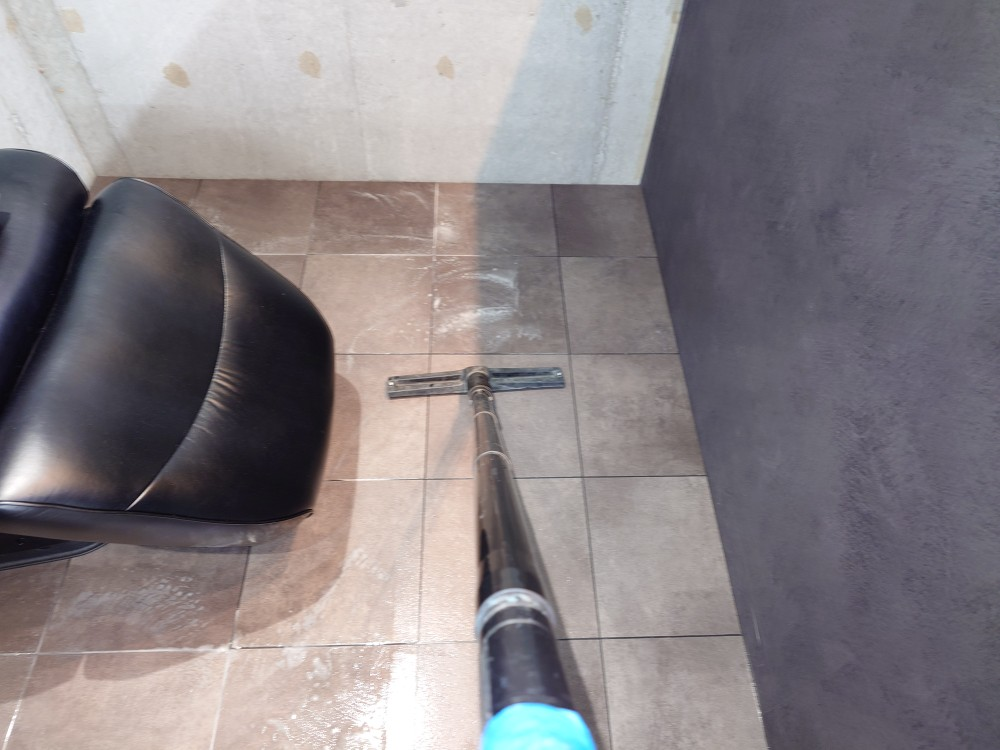
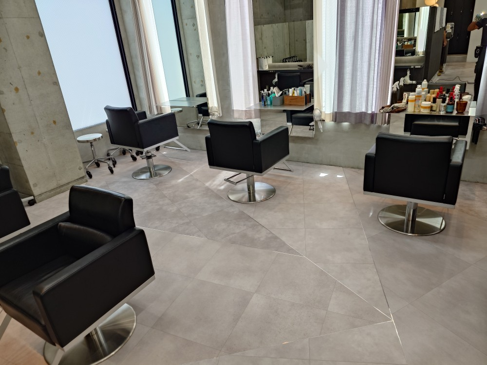
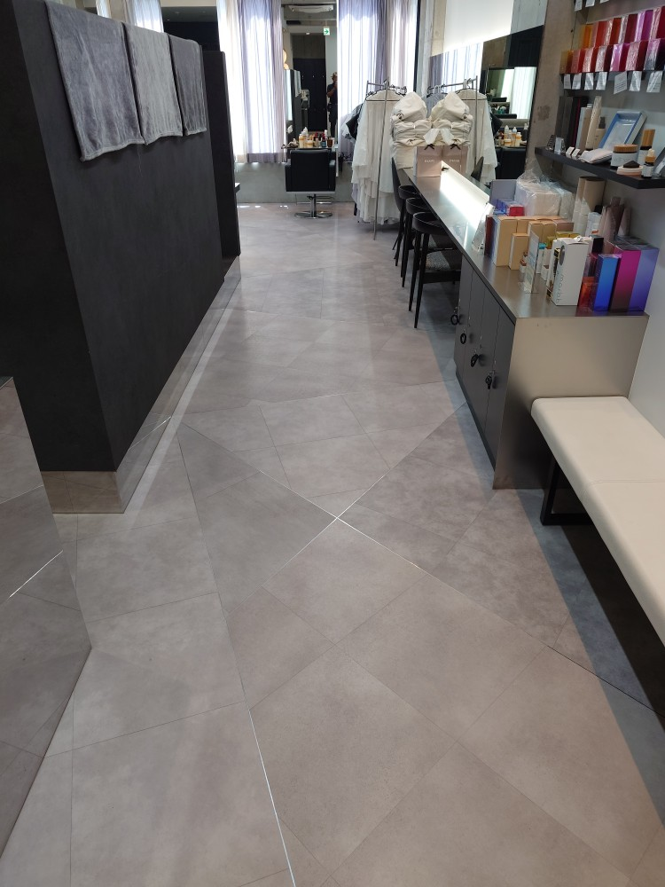

港区南青山4丁目の素敵な美容室Ｃ様の床面洗浄クリーニングを実施しました！

港区南青山4丁目のとてもおしゃれな美容室C様の床面洗浄クリーニングを実施しました！C様の美容室の建物はまだ新しく、築2年と新しい建物です。床面をインスペクションしますと、人気店さんなので、多くのお客様の歩かれた跡がどうしても床面には付着しております。また美容室さん特有の細かい髪の毛の切れ端が、床面の隅、巾木のスキマ、鏡の裏側、バックヤードの床面の裏側、スキマのあちらこちらに、ライトを照らして確認すると見つかります。この髪の毛を全て探して、丁寧に丹念に、刷毛と強力バキュームを駆使して全て綺麗に除去して行きます。床面にはこれも美容室さん特有の「ヘアカラーのシミ汚れ」が細かくあちこちに見つかりますので、こちらは専用薬剤にて丹念に手作業で拭き取って除去して行きます。美容室さんのお休みの日の、早朝〜お昼過ぎ迄の時間帯を頂いて、ほぼ完璧に美容室さん特有の各種汚れを探し出し、綺麗に除去出来ました！







